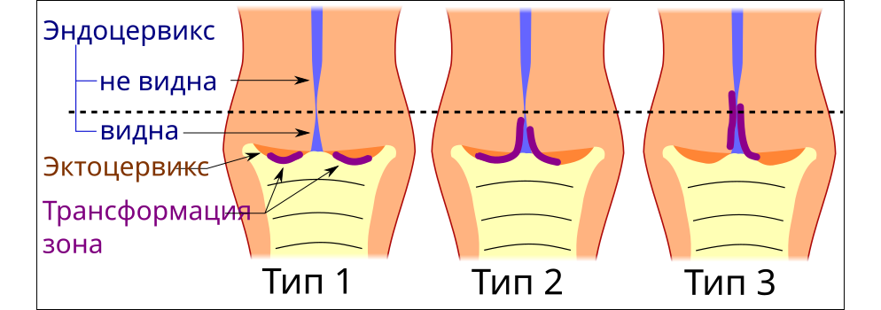
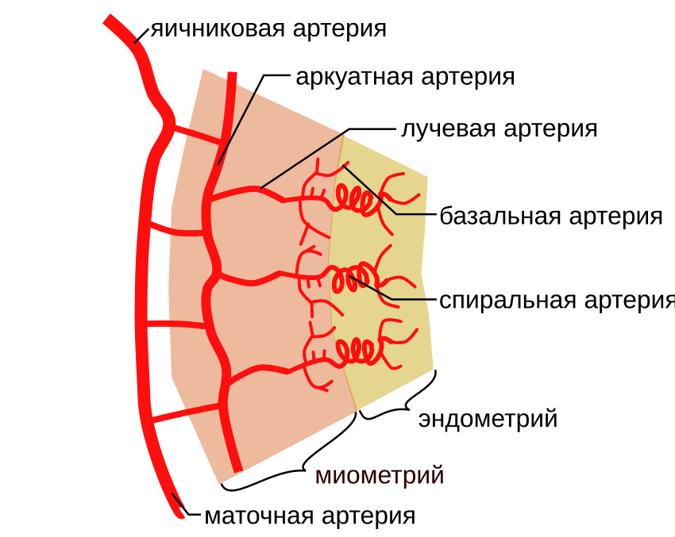

Анатомия женских половых органов
Классификация женских половых органов. Наружные и внутренние отделы
Женские половые органы принято подразделять на две группы: наружные половые органы (organa genitalia feminina externa) — те, что располагаются кнаружи от полости малого таза и доступны непосредственному осмотру, и внутренние половые органы (organa genitalia feminina interna) — расположенные в полости малого таза. Границей между этими двумя отделами служит девственная плева (hymen) — тонкая соединительнотканная складка слизистой оболочки, частично перекрывающая вход во влагалище. Наружные и внутренние половые органы имеют разное эмбриональное происхождение, что во многом объясняет различия в их строении, кровоснабжении и иннервации.

Перечень органов, входящих в каждую группу, с указанием анатомической границы приведён в таблице ниже.
| Группа | Органы | Анатомическая граница |
|---|---|---|
| Наружные половые органы | Лобок, большие половые губы, малые половые губы, клитор, преддверие влагалища, большие и малые железы преддверия, девственная плева | Девственная плева (hymen) |
| Внутренние половые органы | Влагалище, матка (тело, шейка), маточные трубы, яичники |
С практической точки зрения репродуктивная система женщины представляет собой несколько анатомически связанных, но функционально разграниченных зон — подбиотопов (микросред, каждая из которых характеризуется собственным клеточным составом, pH и микробным пейзажем). Выделяют следующие подбиотопы: влагалище, цервикальный канал, эндометрий (слизистая оболочка полости матки), маточные трубы и пространство Дугласа. Пространство Дугласа (excavatio rectouterina) — это наиболее низко расположенный отдел брюшинной полости у женщин, ограниченный спереди задней стенкой матки, сзади — прямой кишкой; именно через задний свод влагалища к нему получают доступ при диагностической пункции. Разграничение подбиотопов имеет прямое клиническое значение: воспалительный процесс, начавшийся в одном из них, распространяется на соседние по принципу восходящего инфицирования — от влагалища через цервикальный канал к эндометрию, затем по маточным трубам в брюшную полость, где патологическое содержимое скапливается прежде всего в пространстве Дугласа.
Эмбриогенез внутренних половых органов и первичной гонады
Наружные и внутренние половые органы имеют разное эмбриональное происхождение. Внутренние половые органы формируются из парных мюллеровых каналов (ductus paramesonephrici) — продольных эпителиальных тяжей, врастающих вдоль мезонефроса в направлении урогенитального синуса. Этот процесс охватывает период приблизительно с 5–6 по 18-ю неделю внутриутробного развития. Верхние отделы мюллеровых каналов остаются парными и дают начало маточным трубам; нижние сливаются по средней линии, формируя матку и влагалище. Хронология и пространственная логика этих преобразований представлены в таблице ниже (см. таблицу).
| Срок гестации | Структура-источник | Образующийся орган |
|---|---|---|
| 5–6 нед | Мюллеровы каналы (закладка) | Начало формирования парамезонефральных тяжей |
| 6–12 нед | Верхние отделы мюллеровых каналов | Маточные трубы (остаются парными) |
| 8–18 нед | Нижние отделы мюллеровых каналов (слияние) | Матка и влагалище |
| 17–20 нед | Первичная гонада — примордиальные терминальные клетки | Яичник: ооциты, окружённые гранулезными клетками |
Параллельно с формированием протоков происходит дифференцировка первичной гонады. В области семенного тяжа половые клетки рассеяны в строме мезенхимы, из которой дифференцируются корковая и мозговая зоны яичника; в мозговое вещество врастают сосуды. Трансформация первичной гонады в яичник происходит на 17–20-й неделе гестации: примордиальные терминальные клетки — предшественники женских половых клеток, мигрировавшие в гонаду из энтодермы желточного мешка, — образуют ооциты, окружённые слоем гранулезных клеток (структурный аналог клеток Сертоли в яичке).
Нарушение любого из описанных этапов ведёт к порокам развития. Дисгенезия гонад — группа состояний, при которых нормальная дифференцировка гонады не завершается. В крайнем варианте формируется streak-гонада («полосовидная» гонада) — соединительнотканный тяж с отдельными клеточными элементами коркового или мозгового слоя, лишённый функциональной паренхимы. Одновременно нарушается развитие производных мюллеровых каналов: матка остаётся рудиментарной, наружные половые органы недоразвиты.
Неполное слияние или аплазия нижних отделов мюллеровых каналов проявляется аномалиями влагалища и шейки матки. Аплазия влагалища — полное отсутствие его просвета вследствие аgenезии соответствующего отдела; атрезия означает заращение уже сформированного канала. Атрезия гимена — заращение девственной плевы без сквозного отверстия, при котором менструальная кровь накапливается выше препятствия. Стеноз шейки — патологическое сужение цервикального канала врождённого происхождения, затрудняющее отток менструального отделяемого. Все эти состояния, как правило, выявляются в подростковом возрасте при становлении менструальной функции: накопление крови в замкнутой полости (гематокольпос, гематометра) сопровождается циклической болью и аменореей.
Строение стенки матки и форма шейки матки
Стенка матки образована тремя концентрически расположенными слоями: слизистой оболочкой, мышечным слоем и брюшинным покровом (см. рисунок ниже).

Внутренний слой — эндометрий (endometrium) — слизистая оболочка, выстилающая полость матки. Он подразделяется на два функционально различных слоя. Базальный слой — глубокий, прилежащий непосредственно к миометрию; он не отторгается в ходе менструации и служит источником регенерации для вышележащего слоя. Функциональный слой — поверхностный; именно он претерпевает циклические пролиферативные и секреторные изменения под действием половых гормонов и отторгается во время менструации. Толщина функционального слоя варьирует на протяжении цикла: в позднюю секреторную фазу она достигает наибольших значений, что имеет прямое диагностическое значение при ультразвуковом исследовании.
Средний и наиболее массивный слой — миометрий (myometrium) — гладкомышечная оболочка матки. Пучки гладкомышечных клеток переплетаются в трёх направлениях, что обеспечивает матке способность развивать значительное усилие при родовой деятельности и одновременно надёжный гемостаз после отделения плаценты. Из глубокого слоя миометрия берут начало субмукозные миоматозные узлы, которые растут в сторону эндометрия и деформируют полость матки.
Наружный слой — периметрий (perimetrium) — брюшинный покров матки. Он покрывает орган неравномерно: дно и тело матки со стороны передней поверхности брюшина переходит на мочевой пузырь, образуя пузырно-маточную складку, а сзади спускается на заднюю стенку влагалища и формирует прямокишечно-маточное углубление.
Форма шейки матки — признак, определяемый при влагалищном исследовании пальпаторно и имеющий клиническое значение для оценки акушерского анамнеза. У нерожавших женщин шейка имеет коническую форму; у рожавших, у которых наружный зев претерпел изменения в родах, она приобретает цилиндрическую форму. Помимо формы, при осмотре шейки оценивают наличие разрывов, объёмных образований и степень деформации — все эти характеристики фиксируются как отдельные клинические находки.
Строение цервикального канала. Зона трансформации
Цервикальный канал (canalis cervicis uteri) — щелевидный канал шейки матки, соединяющий полость матки с влагалищем. Его длина составляет до 4 см, а форма веретенообразная: наиболее широкая часть располагается в середине, тогда как оба конца — наружный и внутренний зев — относительно сужены. Слизистую оболочку канала выстилает эндоцервикс — однорядный высокий цилиндрический эпителий (цилиндрический эпителий состоит из клеток столбчатой формы, ядра которых смещены к основанию). Под поверхностным слоем расположены ветвящиеся трубчатые железы, вырабатывающие цервикальную слизь, состав и реологические свойства которой меняются в зависимости от фазы менструального цикла.

Влагалищная часть шейки матки — экзоцервикс — покрыта многослойным плоским эпителием, по строению аналогичным эпителию влагалища. Область перехода между цилиндрическим эпителием эндоцервикса и многослойным плоским эпителием экзоцервикса называется зоной трансформации, или переходной зоной. Зона трансформации — не просто линия стыка двух эпителиев, а динамически перемещающаяся область активной тканевой перестройки. У молодых женщин репродуктивного возраста она расположена на влагалищной части шейки матки и доступна прямому осмотру; после 40 лет, по мере инволютивных изменений шейки, переходная зона смещается внутрь цервикального канала и при рутинной кольпоскопии становится частично или полностью невидимой. Именно поэтому визуализация зоны трансформации является обязательным условием полноценного кольпоскопического исследования: при её отсутствии в поле зрения ряд лечебных вмешательств противопоказан. Расположение переходной зоны в зависимости от возраста наглядно представлено на схеме (см. рис.).
Ключевую роль в постоянном обновлении эпителия переходной зоны играют резервные клетки — малодифференцированные клетки, расположенные под цилиндрическим эпителием эндоцервикса. Под действием кислой среды влагалища (pH < 4,5) резервные клетки активируются и начинают процесс метаплазии (метаплазия — замещение одного дифференцированного типа эпителия другим в пределах одного зародышевого листка). На первом этапе формируется незрелый метапластический эпителий, не обладающий полноценным барьером; затем, по мере созревания, он превращается в функционально состоятельный многослойный плоский эпителий, неотличимый по структуре от эпителия экзоцервикса. Процесс физиологической метаплазии протекает непрерывно на протяжении всей репродуктивной жизни женщины, однако именно в зоне трансформации, где цилиндрический и плоский эпителии находятся в непосредственном контакте, а резервные клетки наиболее активны, создаются условия для возникновения патологических изменений — дисплазии и цервикальной интраэпителиальной неоплазии.
Эктропион. Полипы шейки матки. Группы риска по предраку шейки
Эктропион — это выворот слизистой оболочки цервикального канала на эктоцервикс, то есть на влагалищную порцию шейки матки. В результате цилиндрический эпителий, в норме выстилающий цервикальный канал изнутри, оказывается снаружи и становится виден при осмотре в зеркалах в области передней или задней губы шейки матки. Ведущая причина эктропиона — травма шейки матки в родах, реже — аборты, диагностические выскабливания и другие внутриматочные вмешательства.
Эктропион нередко смешивают с эктопией, хотя это разные состояния. Эктопия — это смещение цилиндрического эпителия на эктоцервикс без нарушения анатомической целостности шейки; она возникает без предшествующей травмы и не сопровождается деформацией наружного зева. Эктропион, напротив, формируется вследствие разрыва шейки с последующим выворотом слизистой — то есть имеет травматическую природу и структурную перестройку тканей. Основные отличия двух состояний систематизированы в таблице ниже.
| Признак | Эктропион | Эктопия |
|---|---|---|
| Определение | Выворот слизистой цервикального канала на эктоцервикс | Смещение цилиндрического эпителия на влагалищную часть шейки без нарушения структуры |
| Этиология | Травма шейки в родах, абортах, внутриматочных вмешательствах | Гормональные и конституциональные факторы; нередко физиологическая у молодых женщин |
| Морфология | Деформация наружного зева, разрыв ткани шейки, цилиндрический эпителий снаружи | Целостность шейки сохранена, граница цилиндрического и многослойного плоского эпителия смещена кнаружи |
| Отличительный признак | Предшествующая травма, анатомическая деформация шейки | Отсутствие травмы; часто сочетается с зоной трансформации на эктоцервиксе |
Полип шейки матки — это очаговое выпячивание слизистой оболочки цервикального канала, как правило выступающее в просвет канала или за пределы наружного зева. По гистологическому строению, определяемому соотношением железистого компонента и стромы, различают три основных типа. Железистый полип состоит преимущественно из разветвлённых желёз с минимальным количеством стромы. Железисто-фиброзный полип содержит железы и строму приблизительно в сопоставимых долях. Фиброзный полип построен почти исключительно из плотной соединительной ткани с единичными железистыми структурами или без них. Диагностику полипов проводят при кольпоскопии, УЗИ и цервикоскопии с последующим гистологическим исследованием удалённого материала.
Дисплазия шейки матки — это атипическая перестройка многослойного плоского эпителия с нарушением нормального расположения и созревания клеток, не выходящая за пределы базальной мембраны. Именно дисплазия служит морфологической основой предрака. Группа риска по предраку шейки матки — это совокупность пациенток, у которых вероятность злокачественной трансформации статистически достоверно выше, чем в общей популяции. В эту группу включают три категории больных. Первая — пациентки с хроническими цервицитами: длительное воспаление нарушает барьерные свойства эпителия и создаёт условия для персистенции патогенов. Вторая — женщины с дисплазией в анамнезе: после лечения умеренной и тяжёлой дисплазии (CIN 2–3) риск рецидива и прогрессии сохраняется, что требует динамического наблюдения и, при необходимости, конизации шейки матки. Третья — носители ВПЧ онкогенных типов: именно персистирующая инфекция вирусом папилломы человека высокого онкогенного риска признана главным этиологическим фактором цервикального рака; для её выявления применяется, в частности, Digene-тест на материале из цервикального канала.
Нормальное положение матки. Топографические соотношения органов малого таза
В норме матка располагается в полости малого таза таким образом, что её дно обращено кверху и кпереди, а шейка — книзу и кзади. Тело и шейка образуют тупой угол, открытый кпереди: наклон всей матки кпереди относительно оси таза обозначают термином anteverzio («переднее версирование»), а изгиб тела матки кпереди по отношению к шейке — термином anteflexio («переднее сгибание»). Совокупность этих двух параметров и описывает нормальное положение матки в покое. Оба угла физиологически изменчивы: они варьируют в зависимости от наполнения мочевого пузыря и прямой кишки.
Топографические соотношения матки с соседними органами (см. рис. выше) имеют прямое клиническое значение. Дно мочевого пузыря прилежит к передней стенке матки в области перешейка, а уретра соприкасается с передней стенкой влагалища в её средней и нижней третях. Именно поэтому патологические процессы в матке и паракольпии так часто сопровождаются дизурическими расстройствами. Прямая кишка располагается сзади влагалища и связана с ним рыхлой клетчаткой. Тесные анатомические связи между стенками этих органов объясняют возможность их сочетанного вовлечения при воспалительных и опухолевых процессах.
Верхняя часть задней стенки влагалища покрыта брюшиной, которая, переходя на прямую кишку, образует наиболее глубокую точку брюшинной полости у женщины — прямокишечно-маточное углубление, или пространство Дугласа. В это пространство стекает любое свободное содержимое брюшной полости: кровь при внематочной беременности или разрыве яичника, гнойный экссудат при пельвиоперитоните. Доступность пространства Дугласа через задний свод влагалища позволяет выполнять диагностическую кульдоцентез — пункцию через задний свод с аспирацией содержимого, — что остаётся быстрым и малоинвазивным способом верификации гемо- или пиоперитонеума.
Параметрий — это клетчаточное пространство, заключённое между листками широкой связки матки, боковыми стенками тела и шейки матки, пристеночной фасцией таза и верхней фасцией диафрагмы таза. Подвешивающий аппарат матки — круглые и широкие связки — обеспечивает срединное положение дна матки и её физиологический наклон кпереди. В параметрии проходят маточные сосуды и мочеточники, поэтому воспалительные инфильтраты (параметриты) и опухолевая инвазия этой зоны нередко приводят к уретеральной компрессии с нарушением пассажа мочи. МРТ позволяет оценить топографию матки и придатков, их взаимное расположение с мочеточниками и стенками таза в единой плоскости сканирования.
Связочный аппарат матки: подвешивающий и фиксирующий
Матка удерживается в полости малого таза двумя функционально различными системами связок. Подвешивающий аппарат матки — совокупность структур, обеспечивающих физиологическое положение дна матки и её наклон кпереди (anteverzio и anteflexio). Фиксирующий аппарат матки — структуры, удерживающие шейку матки и нижний сегмент в стабильном положении относительно стенок таза.
Круглые связки — парные тяжи длиной около 10–12 см, берущие начало от углов матки, проходящие через паховый канал и прикрепляющиеся к клетчатке больших половых губ. Они тянут дно матки кпереди, формируя anteverzio. Широкие связки представляют собой дупликатуры брюшины, перекидывающиеся поперёк полости малого таза по обе стороны от матки и достигающие боковых стенок таза; в их листках проходят сосуды, нервы и маточные трубы.
Собственная связка яичника соединяет нижний полюс яичника с углом матки, располагаясь позади широкой связки. Подвешивающая связка яичника (воронко-тазовая) идёт от верхнего полюса яичника к боковой стенке таза и содержит яичниковые артерию и вену. Обе связки яичника входят в состав подвешивающего аппарата и вместе с широкой связкой ограничивают подвижность придатков в физиологических пределах.
Фиксирующий аппарат образуют крестцово-маточные связки — плотные тяжи, идущие от задней поверхности шейки матки к крестцу и удерживающие шейку от смещения кпереди, — и маточно-пузырные связки, связывающие переднюю стенку шейки с мочевым пузырём. К фиксирующему аппарату относятся также кардинальные (основные) связки и клетчатка параметрия, однако они будут рассмотрены в контексте пролапса гениталий. При функциональной несостоятельности фиксирующего аппарата повышенное внутрибрюшное давление начинает выдавливать органы малого таза за пределы тазового дна.
Особое клиническое значение имеет понятие хирургической ножки кисты яичника — анатомического образования, формирующегося при перекруте или оперативном удалении кисты (см. рисунок выше). В её состав входят: подвешивающая связка яичника с проходящими в ней яичниковой артерией и веной, маточная труба, собственная связка яичника и широкая связка. В непосредственной близости от хирургической ножки проходит мочеточник, что делает его повреждение одним из главных интраоперационных рисков. Перед пересечением ножки хирург обязан визуализировать мочеточник на всём протяжении в зоне манипуляции. При плановой гистерэктомии связки подвешивающего аппарата пересекают последовательно: вначале на зажимах пересекают круглые маточные связки, затем раздельно — собственную связку яичника и маточный конец трубы.
Таким образом, целостность подвешивающего аппарата определяет физиологическое положение матки, тогда как фиксирующий аппарат обеспечивает её стабильность при изменениях внутрибрюшного давления. Знание топографии каждой связки и её соотношения с сосудами и мочеточником составляет основу безопасной тазовой хирургии.
Транспортная функция маточной трубы
Маточная труба выполняет не только роль канала между яичником и маткой, но и активно участвует в продвижении гамет и зародыша. Эта функция обозначается термином транспортная функция трубы — способность органа перемещать оплодотворённую яйцеклетку в направлении полости матки за счёт двух согласованных механизмов.
Первый механизм — перистальтика трубы: ритмичные волнообразные сокращения гладкомышечной оболочки, распространяющиеся от ампулярного конца к истмическому отделу и далее к матке. Второй механизм — движение ресничек эпителия: мерцательный эпителий, выстилающий просвет трубы изнутри, несёт на своей поверхности тысячи ресничек, которые совершают скоординированные удары в сторону матки и создают постоянный ток жидкости, увлекающей зародыш. Оба механизма действуют одновременно и взаимно усиливают друг друга.
Оплодотворение происходит, как правило, в ампулярном отделе — наиболее широкой и длинной части трубы, непосредственно прилегающей к яичнику и составляющей около двух третей её общей длины. Именно здесь сперматозоид встречается с яйцеклеткой, и именно отсюда начинается путь зиготы к матке (см. рис.).
Путь от ампулярного отдела до полости матки зигота преодолевает приблизительно за 3–4 суток. За это время зародыш делится и достигает стадии морулы. Нарушение любого из двух транспортных механизмов — снижение тонуса мышечной оболочки или гибель ресничек вследствие воспаления — задерживает продвижение зародыша. Если зигота задерживается в трубе и имплантируется в её стенку, развивается трубная внематочная беременность. Окклюзия трубы в ампулярном или интерстициальном отделе, выявляемая при хромосальпингоскопии, становится причиной трубного фактора бесплодия.[5, 7]
Кровоснабжение матки и яичников
Кровоснабжение матки обеспечивается тремя источниками: маточными артериями, артериями круглых связок и ветвями яичниковых артерий. Центральную роль среди них играет маточная артерия (a. uterina) — сосуд, отходящий от внутренней подвздошной артерии (a. iliaca interna) в глубине малого таза вблизи его боковой стенки. Пройдя в основании широкой связки, артерия подходит к боковой поверхности матки на уровне внутреннего зева, не доходя до него приблизительно 1–2 см. Именно в этом месте она перекрещивает мочеточник, что имеет принципиальное хирургическое значение: при лигировании маточной артерии мочеточник рискует попасть в лигатуру.

Артерии круглых связок дополняют кровоснабжение дна и тела матки со стороны паховых каналов. Яичниковая артерия (a. ovarica) — парный сосуд, отходящий непосредственно от брюшной аорты, — кровоснабжает яичник и маточную трубу и отдаёт яичниковую ветвь к верхнему отделу матки, анастомозируя с конечными ветвями маточной артерии. Благодаря этому анастомозу формируется непрерывная артериальная дуга вдоль боковых краёв матки, обеспечивающая коллатеральный кровоток даже при перевязке одного из источников (см. рис.).
Венозный отток от матки осуществляется через одноимённые вены, впадающие в систему v. iliaca interna. Влагалище дренируется густым венозным сплетением. Венозное сплетение влагалища — это обширная сеть анастомозирующих вен в стенке и паравагинальной клетчатке, которая широко сообщается со сплетениями соседних органов малого таза — мочевого пузыря, прямой кишки, а также с венами наружных половых органов. Такая связь объясняет, почему варикозное расширение вен одной зоны нередко сопровождается венозным полнокровием соседних структур, а травматические гематомы влагалища могут распространяться в параметральную клетчатку.
Яичники получают кровь преимущественно из яичниковой артерии, тогда как маточная ветвь играет вспомогательную роль. Венозный отток от яичников идёт по одноимённым венам: правая впадает в нижнюю полую вену, левая — в левую почечную вену, что объясняет более высокую частоту левостороннего варикоцеле яичниковых вен и характерные тазовые боли при его развитии.
Лимфоотток от органов малого таза
Лимфоотток — это движение лимфы от органа по лимфатическим сосудам к регионарным лимфатическим узлам, где она фильтруется и поступает в венозное русло. Для женских половых органов направление этого тока строго зависит от уровня, с которого лимфа собирается, что имеет прямое значение для понимания путей распространения злокачественных опухолей.
От нижней трети влагалища и наружных половых органов лимфа оттекает в паховые лимфатические узлы (nodi lymphatici inguinales) — группу узлов, расположенных под паховой связкой в бедренном треугольнике. Примечательно, что по круглым маточным связкам к тем же паховым узлам частично направляются и лимфатические сосуды от дна матки — анатомический факт, объясняющий нетипичное поражение паховых узлов при опухолях тела матки.
От шейки матки и верхних двух третей влагалища лимфа собирается в наружные подвздошные узлы (nodi lymphatici iliaci externi) — цепочку узлов, лежащую вдоль наружной подвздошной артерии. Именно поэтому при раке шейки матки биопсия подвздошных узлов является обязательным этапом стадирования.
От тела матки, маточных труб и яичников лимфа достигает парааортальных узлов (nodi lymphatici paraaortici) — узлов, расположенных вдоль брюшной аорты, — и паракавальных узлов (nodi lymphatici paracavales), лежащих вдоль нижней полой вены. Этот путь объясняет, почему при раке яичников метастазы нередко обнаруживаются на уровне почечных сосудов, далеко от первичного очага.
Как видно из схемы выше, система лимфооттока организована по этажному принципу: чем выше расположен орган, тем выше уровень регионарных узлов. Знание этой топографии определяет объём лимфодиссекции при онкологических операциях и объясняет закономерности лимфогенного метастазирования.
Иннервация внутренних половых органов
Иннервация половых органов — совокупность нервных путей, обеспечивающих регуляцию функций органов посредством вегетативной нервной системы, — для внутренних половых органов осуществляется исключительно её вегетативным отделом. Вегетативные нервы содержат как симпатические волокна (волокна, передающие возбуждение от симпатических центров грудопоясничного отдела спинного мозга), так и парасимпатические волокна (волокна, берущие начало от крестцовых сегментов S2–S4). Помимо этого, в составе тех же нервных стволов проходят эфферентные волокна, несущие команды от центра к органу, и афферентные, проводящие чувствительные сигналы в обратном направлении.
Одним из главных нервных образований этой зоны является маточно-влагалищное сплетение, формирующееся из верхнего подчревного сплетения и крестцовых парасимпатических нервов. Симпатические волокна регулируют тонус сосудов и сократительную активность миометрия, тогда как парасимпатические обеспечивают вазодилатацию и участвуют в рефлекторных реакциях шейки матки и влагалища. Афферентные пути от тела матки и маточных труб следуют вместе с симпатическими волокнами на уровне Th10–L1, тогда как болевые импульсы от шейки матки и верхней части влагалища передаются по парасимпатическим афферентам крестцового уровня. Этим объясняется различный характер и локализация боли при патологии тела и шейки матки.
Генитальный пролапс: определение, степени, патогенез
Генитальный пролапс (пролапс тазовых органов, ПТО) — патологический процесс, при котором происходит опущение тазового дна и органов малого таза — изолированно или в сочетании, — проявляющееся смещением половых органов до влагалищного входа или выпадением их за его пределы. С механической точки зрения генитальный пролапс представляет собой разновидность грыжи тазового дна — то есть выхождения органов через дефект опорных структур, — развивающейся именно в области влагалищного входа.[2][5] Термин «грыжа тазового дна» подчёркивает, что несостоятельность мышечно-фасциального каркаса — необходимое условие формирования дефекта, а не просто его следствие.
Патогенез пролапса многофакторен. Повреждение фиксирующего и подвешивающего аппаратов матки, атрофия мышц тазового дна и слабость соединительнотканных структур создают условия, при которых внутрибрюшное давление последовательно смещает органы вниз. Предрасполагающими факторами служат многократные роды, тяжёлый физический труд, ожирение и возрастная инволюция тканей.
Крайнее проявление процесса — выпадение матки (полное смещение органа за пределы половой щели), при котором влагалище фактически выворачивается наизнанку. Выпадение матки соответствует IV степени пролапса и требует хирургической коррекции.
Для оценки тяжести процесса принята четырёхстепенная классификация пролапса тазовых органов; её критерии приведены в таблице ниже.
| Степень | Критерий положения шейки матки и/или стенок влагалища | Положение тела матки |
|---|---|---|
| I | Шейка матки опускается не более чем до половины длины влагалища | Выше входа во влагалище |
| II | Шейка матки и/или стенки влагалища достигают входа во влагалище | Выше входа во влагалище |
| III | Шейка матки и/или стенки влагалища выходят за пределы входа во влагалище | Остаётся выше входа во влагалище |
| IV | Полное выпадение: все стенки влагалища за пределами входа | За пределами входа во влагалище (выпадение матки) |
Принципиальное разграничение III и IV степеней состоит в положении тела матки: при III степени за пределы входа выходят лишь шейка и/или стенки влагалища, тогда как тело сохраняет внутреннее положение; при IV степени орган покидает полость таза целиком. Степени пролапса — не просто описательные категории: они определяют выбор метода лечения и объём хирургического вмешательства.
При изолированном опущении передней стенки влагалища допустимо использование уточняющей терминологии, отражающей смещение конкретной структуры, а не матки в целом. Однако вне зависимости от номенклатуры в основе любой формы пролапса лежит единый механизм — несостоятельность мышечно-фасциального тазового дна как удерживающей системы.
Источники
- Гинекология в таблицах
- Гинекология. Айламазян 2013
- Гинекология. Савельева, Бреусенко 2018 (4-е изд)
- Национальное руководство. Савельева, Кулаков, Манухин 2009